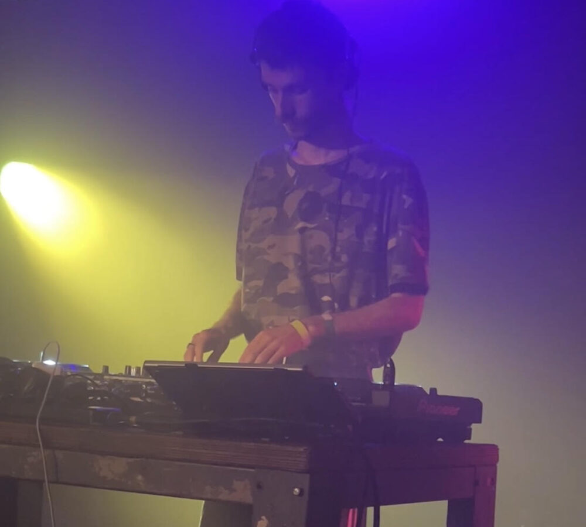
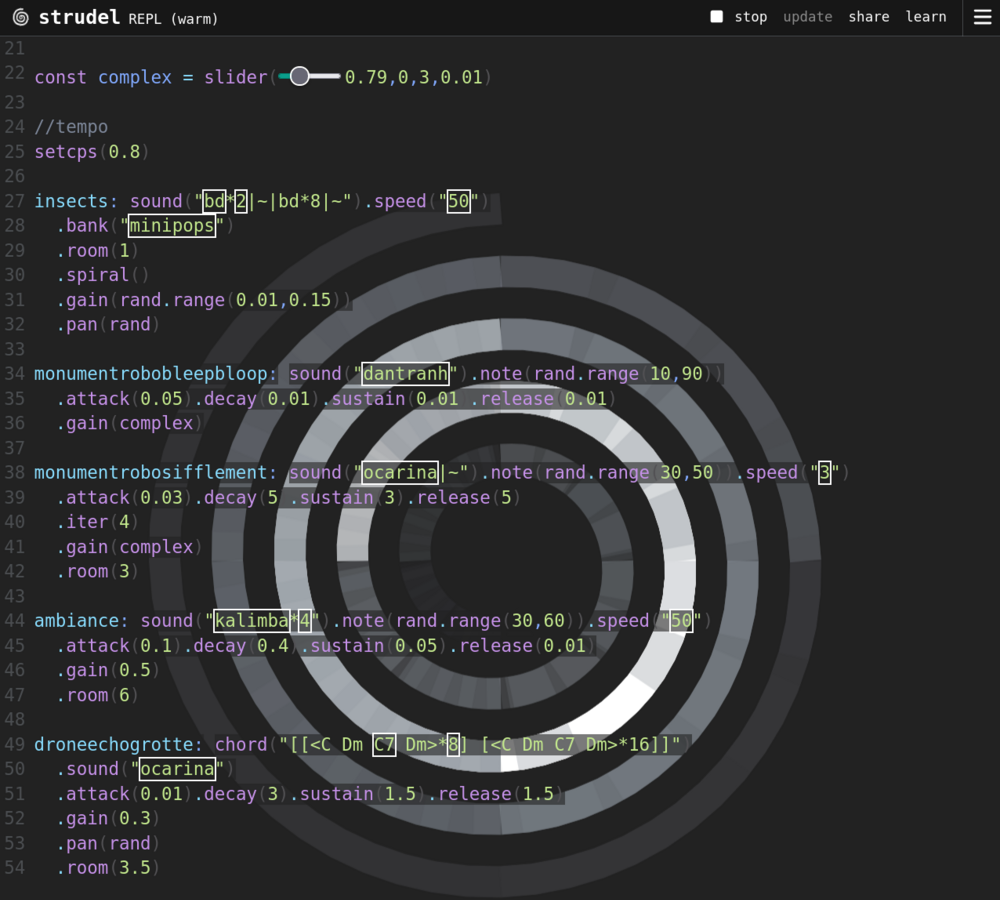

Centres d'intérêt
Mes projets personnels en dehors de la cybersécurité.
DJ
Je mixe et je produis de la musique électronique.

- Matériel : contrôleur DDJ-FLX4, platines CDJ-900 et CDJ-1000, XDJ et XDJ-RR, notions en vinyles
- Logiciel : Rekordbox
- Styles : techno, industrial, ghetto tech, house, drum and bass, hyperpop
- Production : REAPER, et le sampler-séquenceur EP-133 K.O. II (Teenage Engineering)
Radio
Contenu à venir.
Live coding
Je compose de la musique en code avec Strudel, un outil de live coding qui fonctionne directement dans le navigateur.

Cette capture montre une pièce musicale composée pour accompagner « Temple du monument perdu », un texte que j'ai écrit.
Le live coding réunit deux de mes passions : la programmation et la musique.